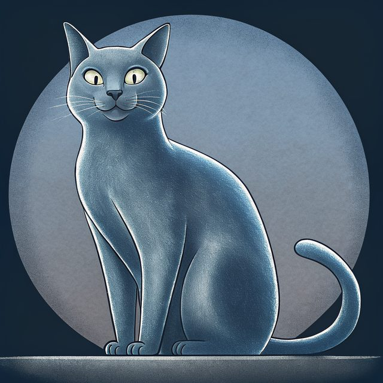
Debian, held still
Packages come from Debian stable. An update is a new signed image, and the previous one still boots. Releases are signed, starting with v0.1.1-rc.2. Rollback is designed, not built.
A quiet Debian host for cloud nodes, named for the Russian Blue. Small by default. Watchful about what it is handed. Able to speak, if you ask it to, before it asks you anything.
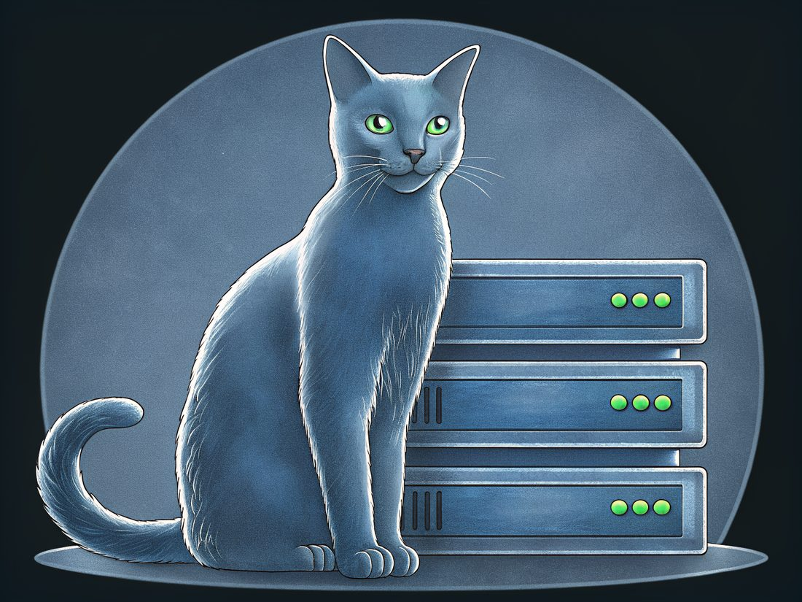
Blunix is named for the Russian Blue. It is a famously quiet breed. It is small, it watches a room before it walks in, and when it falls it lands on its feet. The people who build this keep cats. We wanted a host that behaves the same way: says nothing until it is asked, carries little, checks what it is handed, and gets back up when something goes wrong. Each trait below says whether it is in the code today.
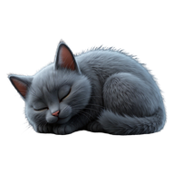
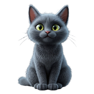
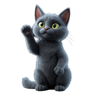
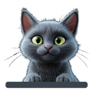
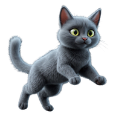
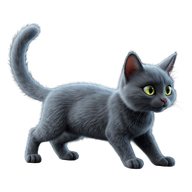
A quiet Debian host, in three rules. Each one is a promise about how the machine behaves, and the pages linked here say how much of it is built.

Packages come from Debian stable. An update is a new signed image, and the previous one still boots. Releases are signed, starting with v0.1.1-rc.2. Rollback is designed, not built.
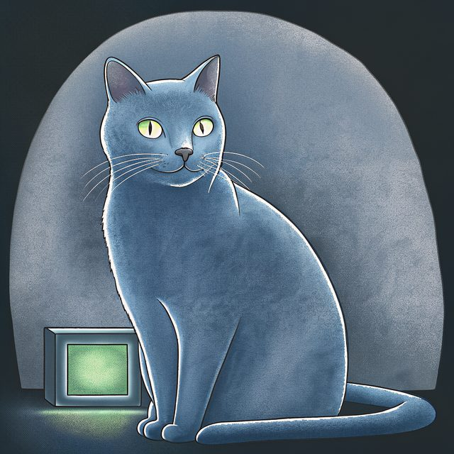
A default set small enough to read on one screen. Root stays available for a person who has to see why a node failed.
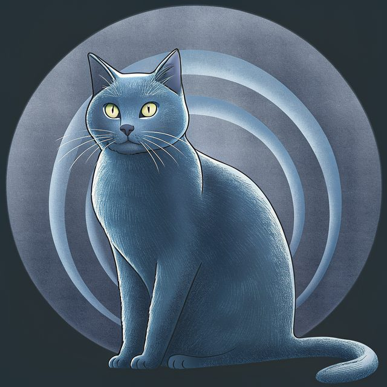
Five numbered boot entries. Speech starts after the kernel, so a blind operator can answer the install prompts. Read the boot entries.
Read live from the releases on afterdarksys/blunix. A new release shows up here without a new deploy of this site.
The latest release loads from GitHub when JavaScript runs. Without it, read the releases on GitHub.
Built means the code and its tests are in the repository. Live means it answers on the internet. Each line says which.
SHA256SUMS. The panel above shows only what GitHub has actually published.blunix command for checks and support reports, gitbuild for source builds, the build-proxy for netboot LANs, and the image helpers. Read the tools.The portal is not open yet. Its address is build.blunix.io.
Read the install sequence. Read the tools. Read the five boot entries. Read the release log. Read the account. Read the API. Read the service design. Read the platform design. See how it fits together.
Blubie, the Blunix cat, is a Russian Blue: one even silver-blue coat, green eyes, and a habit of sitting on warm hardware. These are the drawings we use around the site.
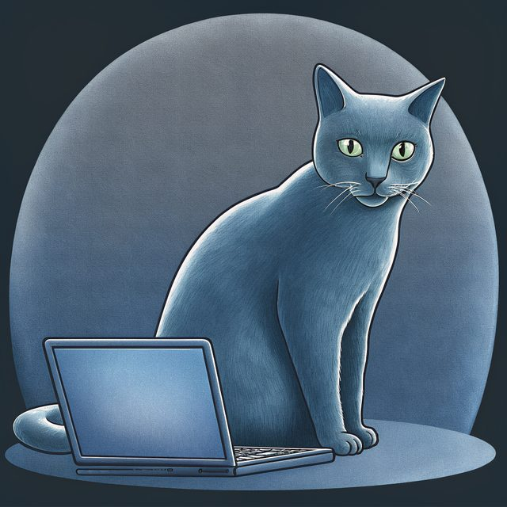
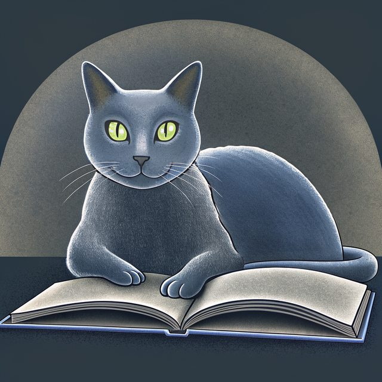
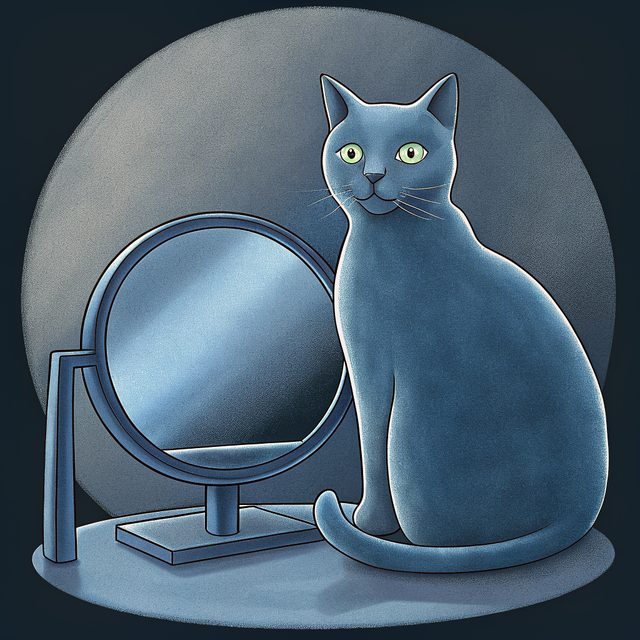
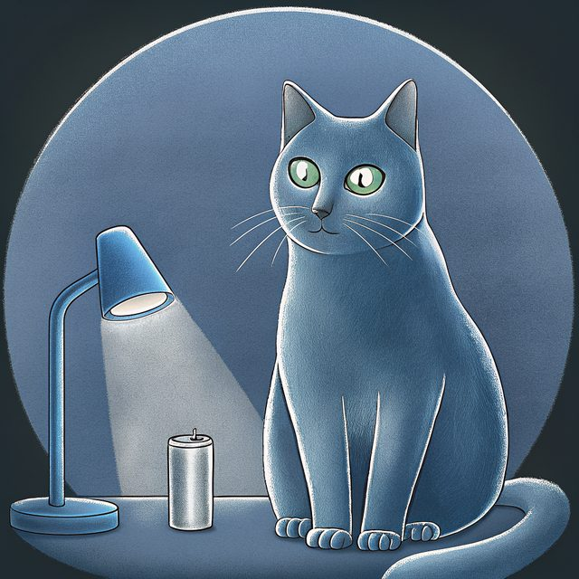
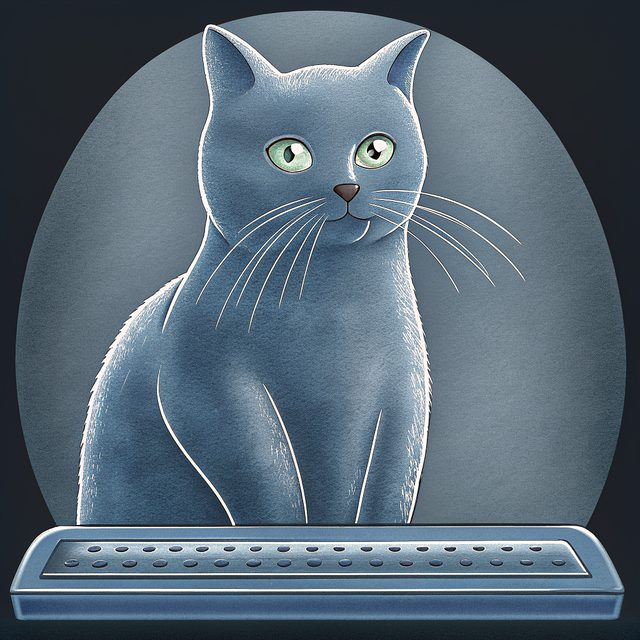
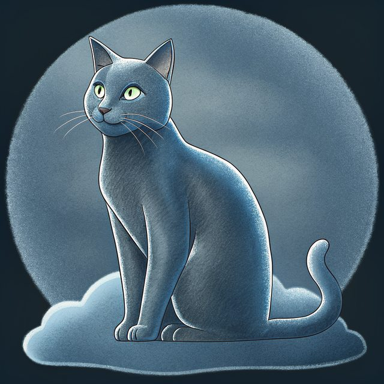
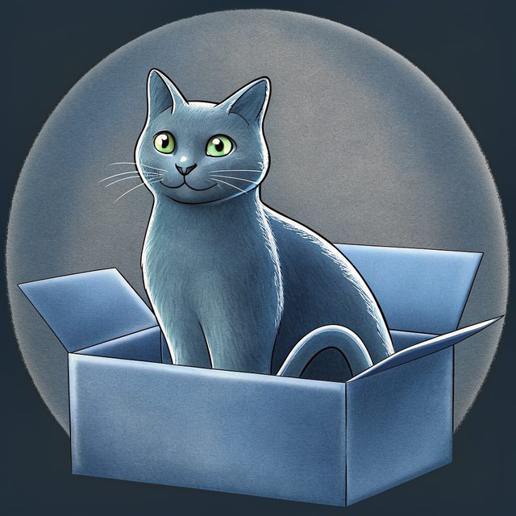
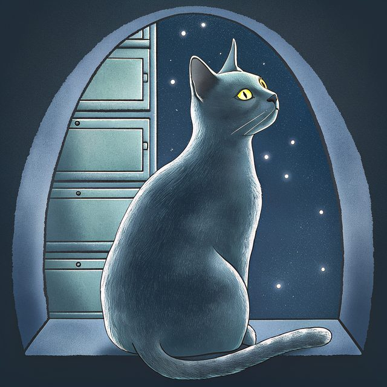